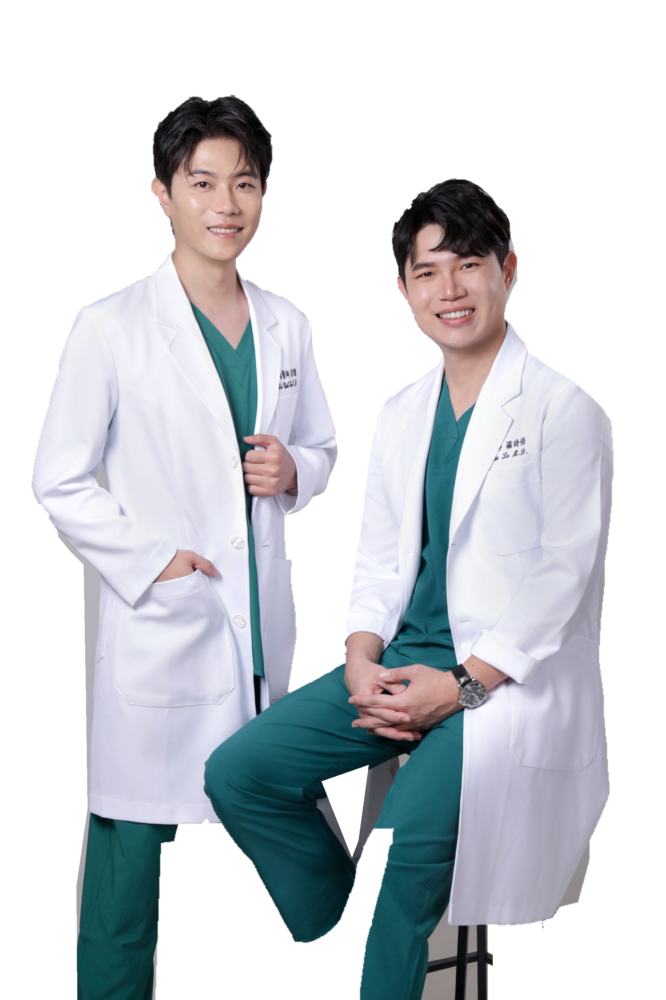
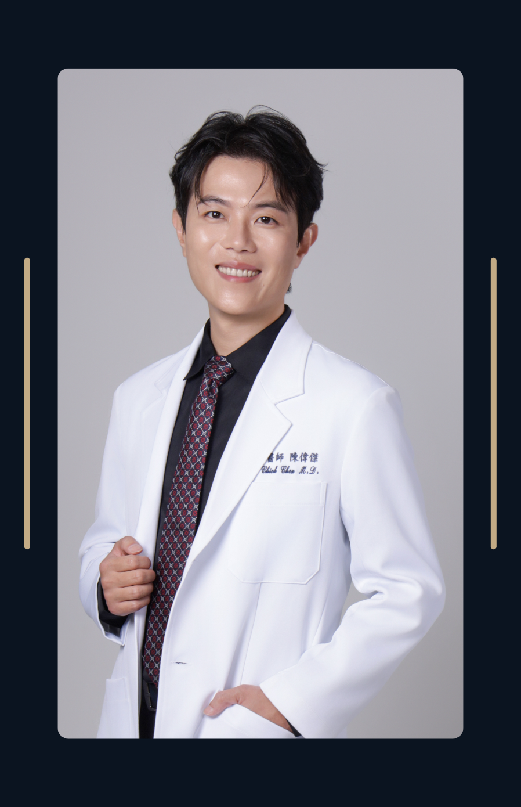
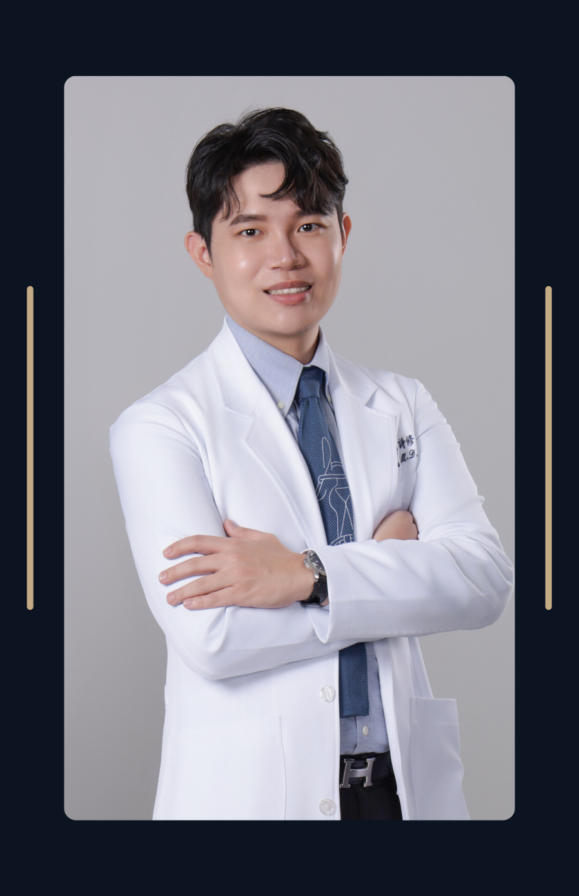
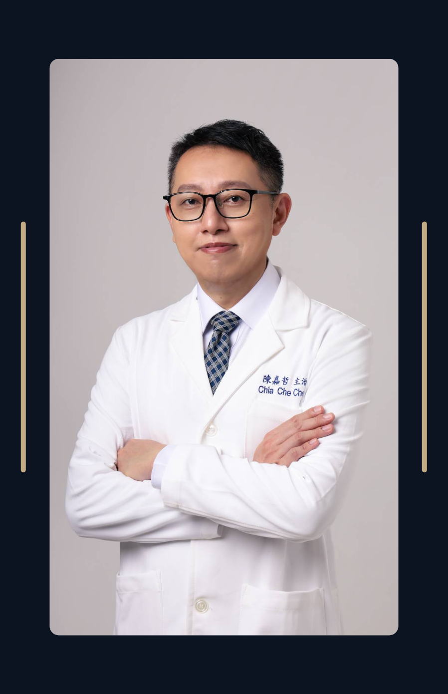
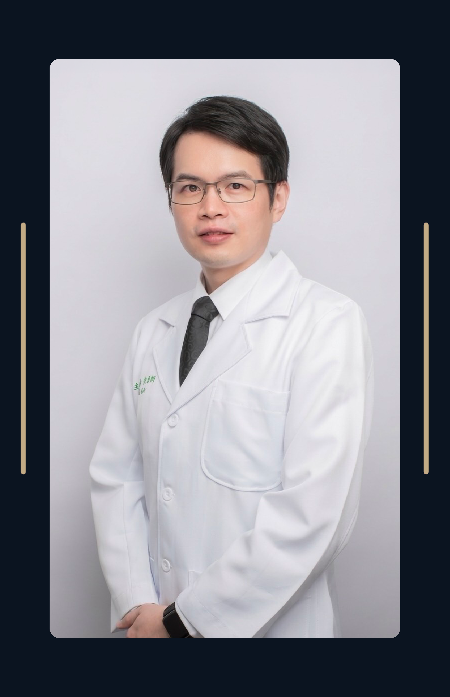
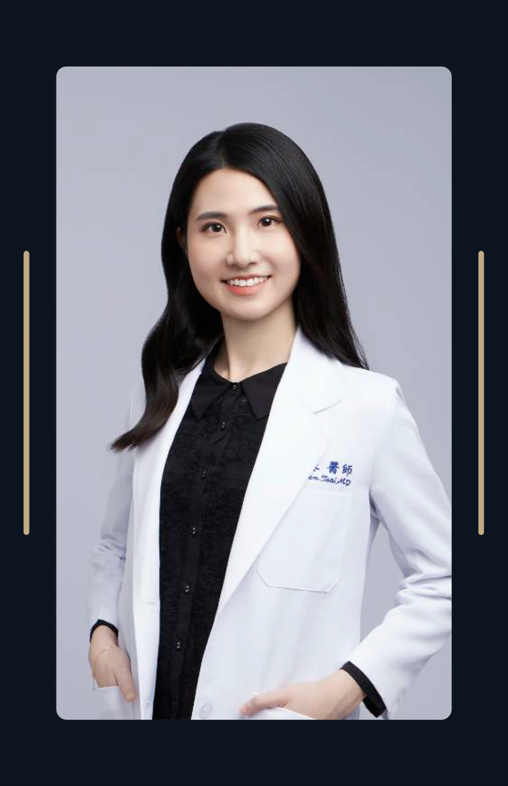
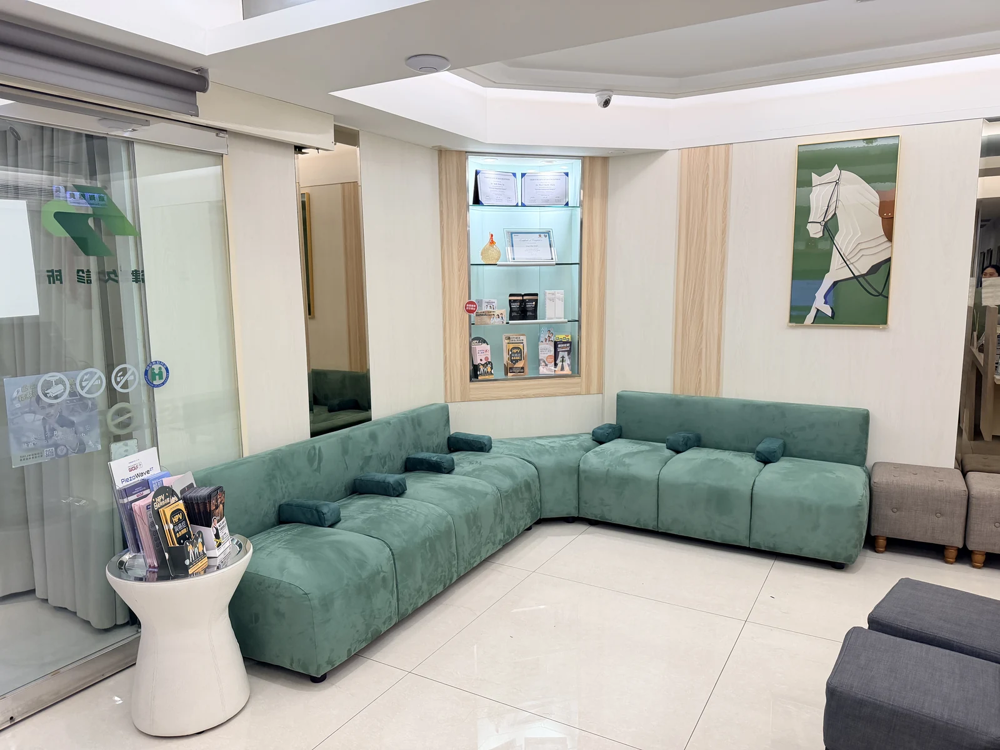
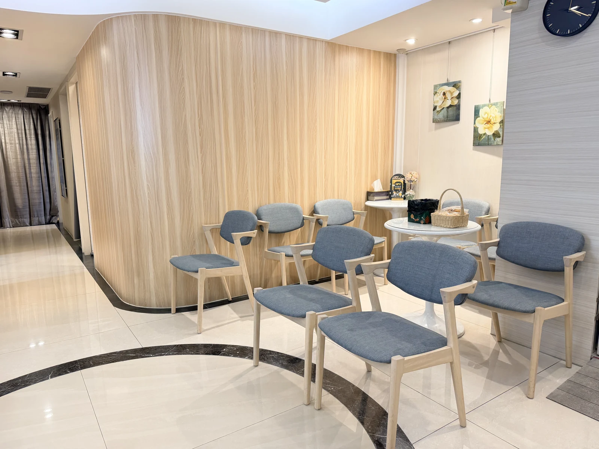
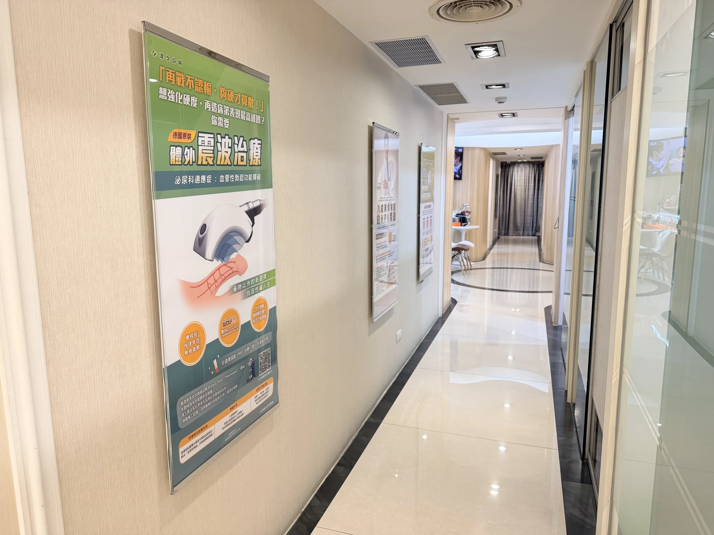
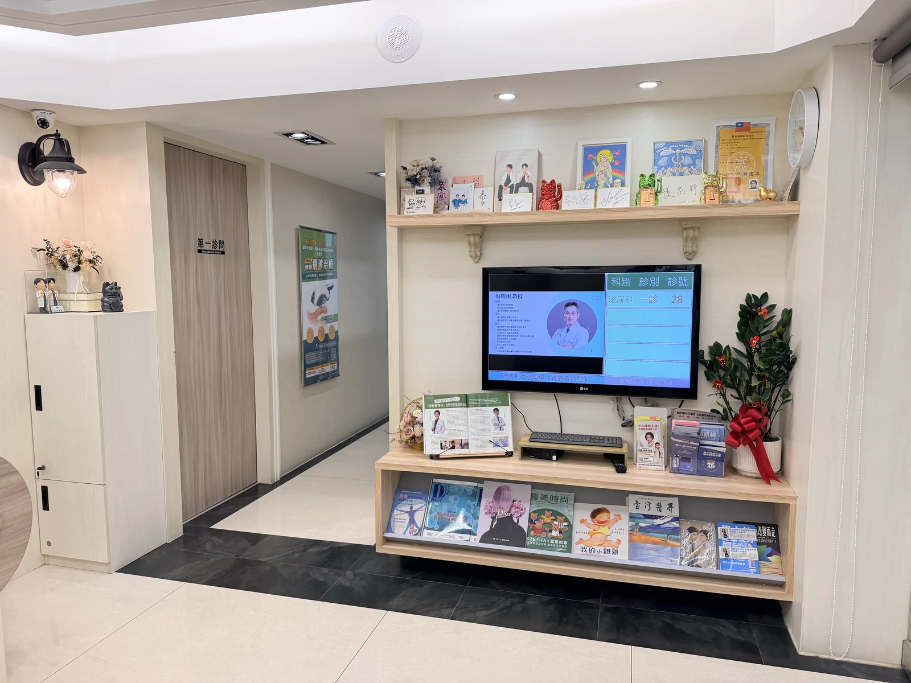

星期一
- 09:30–12:30
- 陳偉傑
- 13:30–17:00
- 蔡沅蓁（家醫專科）
- 18:00–20:30
- 羅詩修
CARE FOR A HEALTHIER TOMORROW

廣受好評・ 志在服務
台北割包皮推薦，前醫學中心主治醫師泌尿團隊
OUR TEAM

院長／泌尿科醫師

執行院長／泌尿科醫師

肛門直腸外科主任
泌尿科醫師
泌尿科醫師

整形外科醫師

家醫科醫師
首席顧問／教授
津久診所實景照片，可左右滑動或使用箭頭循環瀏覽；不自動播放。




SERVICES · 診療服務
18 項服務依需求分組，方便您快速閱讀。
11 項服務已連結至現有導覽列對應的正式站頁面（另開新分頁）；其餘 7 項目的地待確認，暫不提供點擊。
CARE · 內容預留
此區接入經確認的照護特色與說明。
不以示意文案宣稱設備、療效、認證或排名。
CLINIC HOURS
依本次提供的門診時間圖整理；空白時段以「—」呈現，不另推定為休診。星期日未列於原圖。
最晚請於看診時間結束前 30 分鐘完成報到。
後續與聯絡區使用同一份門診資料，避免修改時漏掉其中一處。
SELECTED REVIEWS
人工整理，非即時同步
依提供的七張 Google 評論截圖節錄。原評論連結、確切日期與公開使用確認待補；以下為個別就診經驗。
★★★★★
截圖顯示：7 個月前
兩位醫師看診時都相當有耐心，會依個人狀況詳細說明評估結果與處理方式，不會讓人有被草率對待的感覺。護理人員態度親切、流程清楚，讓就醫過程輕鬆不少。
評論節錄 · 來源連結待補
★★★★★
截圖顯示：上次編輯：1 個月前
昨天完成術後復診，整體療程告一段落，真的很感謝醫師與護理團隊的細心照顧！醫師不但專業、帥氣又非常幽默，過程中讓人放鬆不少，術後有疑問也會親自透過 LINE 耐心回覆、協助解惑，讓人很安心。
評論節錄 · 來源連結待補
★★★★★
截圖顯示：2 個月前
醫生談吐幽默但不失認真
關於小老弟出頭天的術前評估與術後追蹤都非常細心
會針對實際狀況量身打造應對方案
評論節錄 · 來源連結待補
★★★★★
截圖顯示：3 個月前
雖然病患很多人，不過羅醫師與陳醫師及各位護理師都很專業又親切，整間診所把握快狠準的原則為各位兄弟服務
術前詳細說明流程與注意事項，有問必答，讓人相當安心。
評論節錄 · 來源連結待補
★★★★★
截圖顯示：5 個月前
手術整體過程非常專業，從術前開始醫師與護理人員都會詳細說明每個步驟與注意事項。自費項目也不會強迫推銷，可以依照自己的需求選擇
評論節錄 · 來源連結待補
★★★★★
截圖顯示：8 個月前
從網友得知津久, 自己抱著試試看心態
來做震波以及磁波椅,第一次做完震波回去就覺得超有感,
以前在外面有做過別家也沒有這麼有感覺,
評論節錄 · 來源連結待補
★★★★★
截圖顯示：1 年前
醫生與護理人員整體給人的感受非常好，不僅專業度高，態度也相當親切，過程中帶有幽默感，能有效減輕患者的緊張情緒。
在手術與治療的過程中，醫護團隊會持續關心患者的狀況與心情，讓人覺得安心與被照顧。
評論節錄 · 來源連結待補
WordPress 後台人工維護功能尚未接入；預計至少每月核對一次。
FIRST VISIT
以下是首頁導覽流程提案，尚非診所正式就診規定；實際預約與報到方式待確認。
JOURNAL
以下為文章卡片配置，並非已發布文章；圖片、標題與日期待接入。
摘要內容位置；由既有衛教文章帶入。
分類・日期待確認
標題可換行，不以固定高度裁切文字。
分類・日期待確認
確認文章後才提供可操作的閱讀連結。
分類・日期待確認
FAQ
以下僅示範問題列表與展開狀態，不是診所正式問答；可點選每一列查看版型。
此處預留就診類答案。正式問題、答案及需要的連結，確認後由 WordPress 後台維護。
此處預留服務類答案；目前不填入療效、費用、手術準備或恢復時間等未確認資訊。
此處預留聯絡方式與預約說明。您可以先查看本頁的聯絡資訊版型。
前往聯絡資訊區VISIT & CONTACT
捷運行天宮站4號出口右轉步行40秒（依提供圖示）
地址可另開 Google 地圖，電話可點擊撥號；預約看診可另開預約系統。